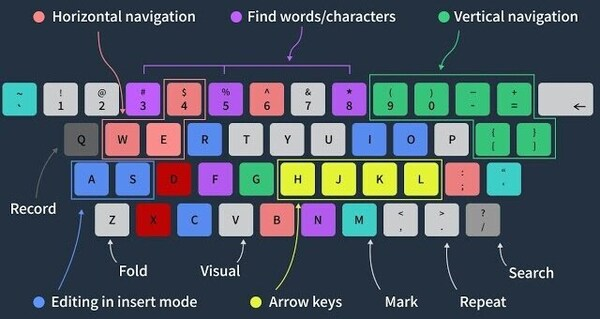
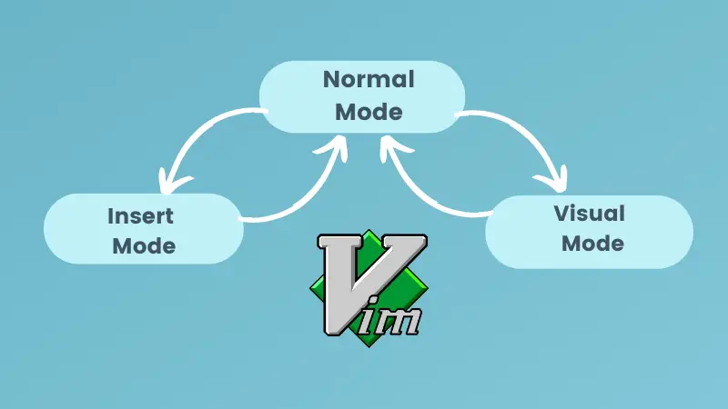

ヴィム モーション
Vim Motions
Diese Motions sind darauf ausgelegt, dass nicht die Maus sondern die Tastatur zur Navigation innerhalb eines Textdokuments verwendet wird. Damit entfällt der Griff weg von der sogenannten 'Home-Row' auf der Tastatur, das Suchen der Position des Mauszeigers, das Bewegen des Zeigers zur gewünschten Position und die Rückkehr der Hand von der Maus zur Tastatur. Auch wenn dies normalerweise nicht allzu viel Zeit in Anspruch nimmt, summiert sich das im Laufe eines Tages, vor Allem wenn man beruflich viel schreibt wie es beim Programmieren der Fall ist.
Der Ursprung geht zurück auf die Zeit, als es noch gar keine grafischen Oberflächen gab und die Navigation mit der Tastatur demnach die einzige Möglichkeit war und ist bereits im Editor vi (erschienen 1979) eingeführt worden. Seither haben sich diese Motions in den Nachfolger vim und den Ableger nvim übertragen, aber auch viele grafische Editoren wie Visual Studio Code oder IntelliJ IDEA kann man mittels Plugins erweitern.
Selbst Window-Manager unter Linux wie [Hyprland], Terminals wie [Alacritty] oder sogar Browser wie [Firefox] unterstützen inzwischen diese Tastenkombinationen, wodurch die Notwendigkeit auf die Maus als Haupteingabeinstrument bei der Bedienung von PCs immer mehr wegfällt.

モード
Modes
Insert: Normalerweise gibt es nur einen einzigen Modus mit dem man Text bearbeitet und der den meisten Menschen, die mit einem Textverarbeitungsprogramm wie Microsoft Word oder sogar dem Windows Editor gearbeitet haben. In [vim] heißt dieser Modus [Insert].
Normal: Zusätzlich zu unserem bekannten (und eigentlich demnach 'normalen') Modus gibt es den [Normal-Mode]. In diesem Modus gibt man keinen Text ein sondern bewegt sich mittels bestimmten Tastenkombinationen durch das Dokument und navigiert mit dem Keyboard zu den Stellen, wo man Text einfügen möchte. Neben der Navigation gibt es aber auch noch Möglichkeiten zum Löschen, Formatieren, Suchen und Ersetzen und vieles mehr, was in diesem Modus gemacht werden kann. Es ist definitiv der Modus in dem man sich am Meisten befindet, weshalb er auch den Namen [Normal] erhalten hat.
Visual: Auch wenn der [Normal-Mode] bereits viele Möglichkeiten bietet um Text du bearbeiten, löschen oder kopieren, ist es nicht immer so eindeutig wie man die Motions für gewisse Änderung nutzt. Um ein visuelles Feedback über das was passiert zu erhalten, gibt es den [Visual-Mode], der einem mit Markierungen Auswahlen ermöglicht, auf die man dann Motions anwenden kann.
ノーマルモード
Normal-Mode
Die Bewegung im Normal-Mode erfolgt nicht mit den Pfeiltasten (da dies bedeuten würde, dass man die Hände erst recht von der [Home-Row] wegbewegen muss) sondern mit den Tasten [J und K] für [unten und oben], sowie [H und L] für [links und rechts]. Gerade dies braucht anfangs sehr viel Zeit um damit Geläufig zu werden.
Dass die Bewegungen nach oben und unten am Besten zu erreichen sind hat auch seine Gründe, denn für die Bewegung innerhalb einer Zeile bietet [vim] weit bessere Möglichkeiten anstatt sich nur Zeichen für Zeichen zu bewegen:
In Vim kann man sich innerhalb einer Zeile von Wort zu Wort bewegen, indem man im [Normal-Mode] die Taste [w] (für Word) drückt. Der Cursor spring dann zum Anfang des nächsten Wortes. Mittels [e] (für End) kann man zum nächsten Wortende springen. Mit [b] (für Back) kann man zum vorherigen Wortanfang zurückspringen.
Hinzu kommen [f] (für Find) um zu Zeichen innerhalb der Zeile, und [/] um die Suche zu starten und direkt zu Matches einer Zeichenkette die man eingibt zu springen. Mit [0] kommt man an den Zeilenanfang, [_] bringt einem zum ersten Zeichen auf dieser Zeite und [$] platziert den Cursor ans Ende der Zeile.
Diese Motions sind extrem wichtig, weil sie sich mit [d] (für Delete) und [c] (für Change) kombinieren lassen und damit wortweises löschen oder ändern ermöglichen. Möchte man zum Beispiel 3 Wörter entfernen, kann man [3dw] drücken und die Wörter sind gelöscht. Möchte man sie nicht nur löschen sondern stattdessen etwas Anderes eingeben, erreicht man dies mit [3cw].
Mit [dd] lassen sich ganze Zeilen löschen (wobei [5dd] gleich 5 Zeilen löscht), [d$] entfernt Alles bis ans Ende der Zeile.
挿入モード
Insert-Mode
Die Bewegungen sind schön und gut, aber ohne Text einzugeben zu können bringt einem ein Textverarbeitungsprogramm nicht viel. Da der Cursor ein Block-Cursor ist, gibt es 2 verschiedene Hauptarten um in den [Insert-Mode] zu wechseln:
[i] (für Insert) startet den [Insert-Mode] links vom Block-Cursor, während [a] (für Append) ihn rechts davon startet. Zusätzlich kann mit mit [I] den [Insert-Mode] am Anfang der Zeile starten, während [A] den Cursor ans Ende der Zeile platziert und in den Eingabe-Modus wechselt.
Das sind aber noch nicht alle Möglichkeiten die man hat um zu wechseln und eine andere Art wurde im vorherigen Abschnitt bereits gezeigt: mit [cw] (für Change Word) entfernt man Alles bis zum nächsten Wort und der Eingabe-Modus wird gestartet. Hiermit lassen sich einzlene Wörter sehr einfach ändern. [C] löscht Alles bis zum Ende der Zeile und lässt einem Änderungen vornehmen.
Die große Stärke davon sind Kombinationen wie [cib] (Change inside brackets), wo Alles zwischen runden Klammern geändert wird, [ci"] ändert Alles innerhalb von Anführungszeichen und [cit] (Change in tag) nimmt Änderungen innerhalb von HTML-Tags vor. Das alles sind aber nur kleine Auszüge in die Möglichkeiten, die Vim-Motions bieten.
学ぶ
Lernen
Da diese Seite unmöglich alle Funktionen von [Vim] erklären kann und man die Vorgehensweise kaum nur mittels passiver Aufnahme wertschätzen kann, empfielt es sich entweder [Vim] zu installieren und den inkludierten [Vimtutor] zu nutzen, der einen durch die ersten Schritte leitet. Auf Linux ist vim normalerweise bereits vorinstalliert und der Tutor kann mittels Terminal und dem Befehl [vimtutor] direkt gestartet werden. Alternativ gibt es den [Vimtutor] auch online, ebenso wie weiterführende, interaktive Tutorials.
Nachdem man die Grundlagen gelernt hat und sich mit den oberen Konzepten angefreundet hat, kann ich das Buch "Practical Vim: Edit Text at the Speed of Thought" von "Drew Neil" sehr empfehlen. Auch wenn ich bereits recht sicher im Umgang mit den Motions war, konnte ich vom Start weg sehr machtvolle Einblicke gewinnen, die ich sofort in meine Umgangsweise eingebaut habe.